Galeria de Visualizações — Parte 1
Clique em qualquer imagem para ampliar. Gerado com matplotlib.

Distribuição de Graus
Histograma dos graus dos 20 aeroportos. Evidencia a estrutura hub-and-spoke: GRU, CNF e BSB dominam com grau 19.
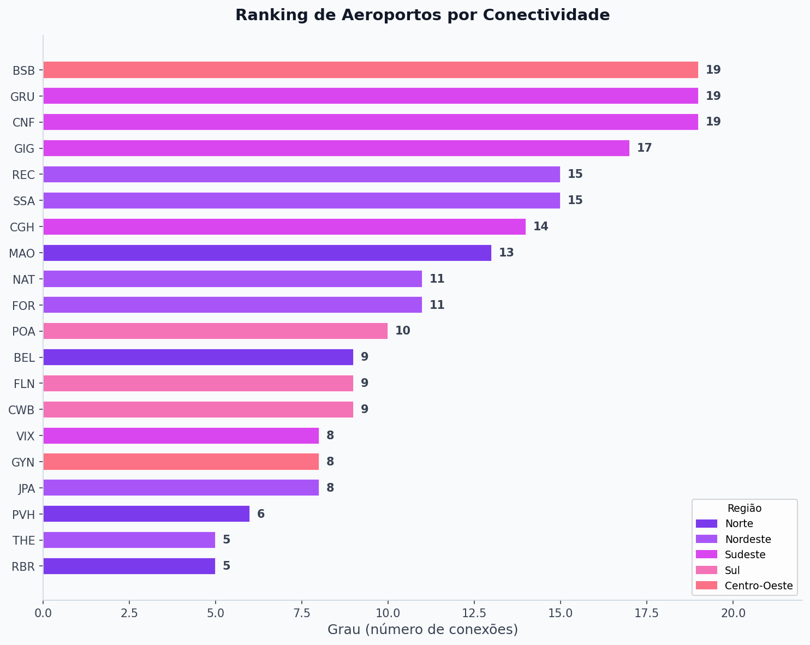
Ranking de Aeroportos
Barras ordenadas por grau decrescente. Permite identificar rapidamente os hubs nacionais e regionais.
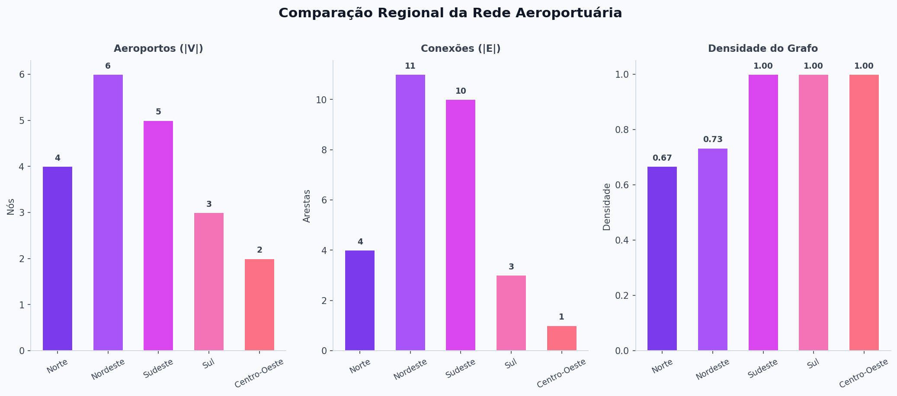
Comparação Regional
Densidade por região. Sudeste, Sul e Centro-Oeste têm densidade 1,0; Norte é o menos denso (0,67).
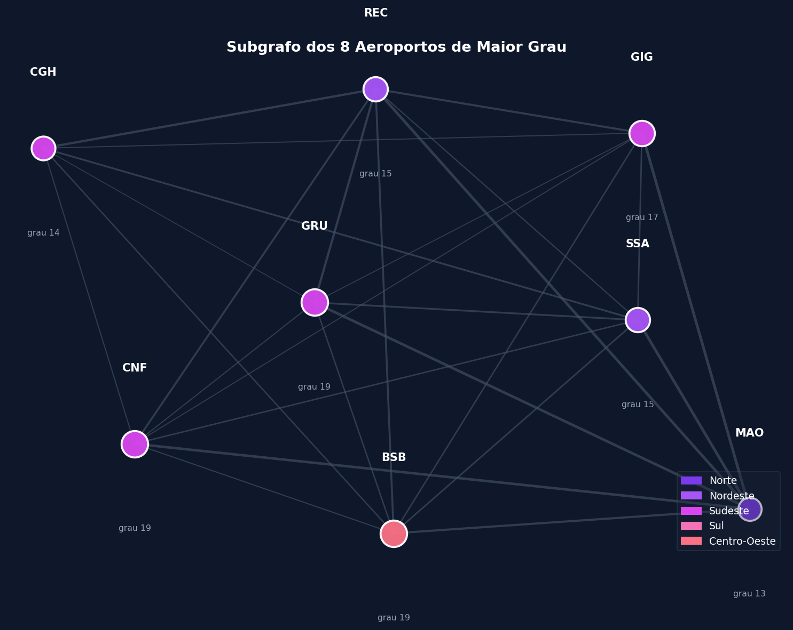
Subgrafo dos Hubs
Os 5 aeroportos de maior grau e suas interconexões. Formam um clique quase completo no núcleo da rede.
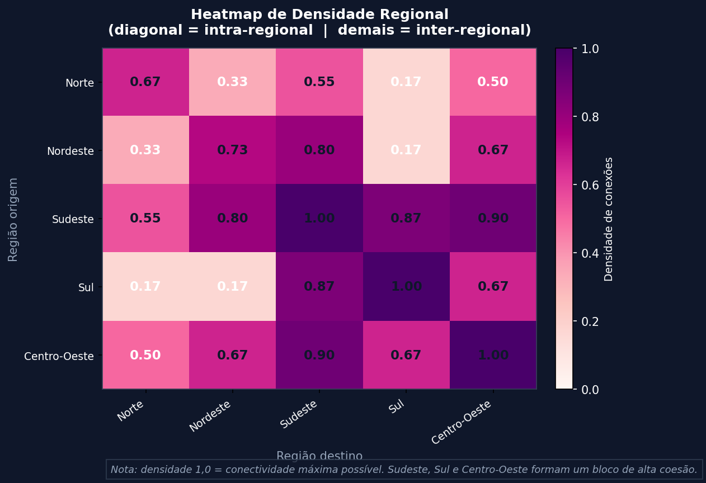
Heatmap de Densidade Regional
Matriz 5×5 de densidade entre regiões. Diagonal = intra-regional; demais = inter-regional. Sudeste, Sul e Centro-Oeste têm densidade máxima (1,0).
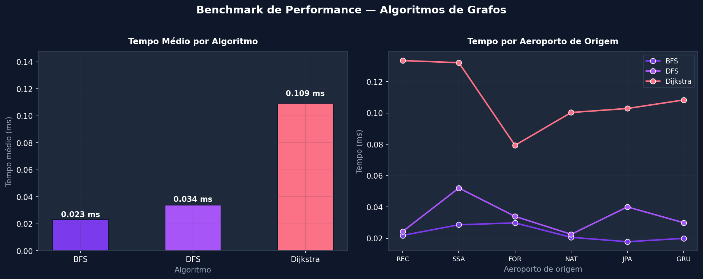
Benchmark de Algoritmos
Tempo médio (barras) e variação por origem (linhas) para BFS, DFS e Dijkstra. Eixos e cores padronizados por algoritmo.
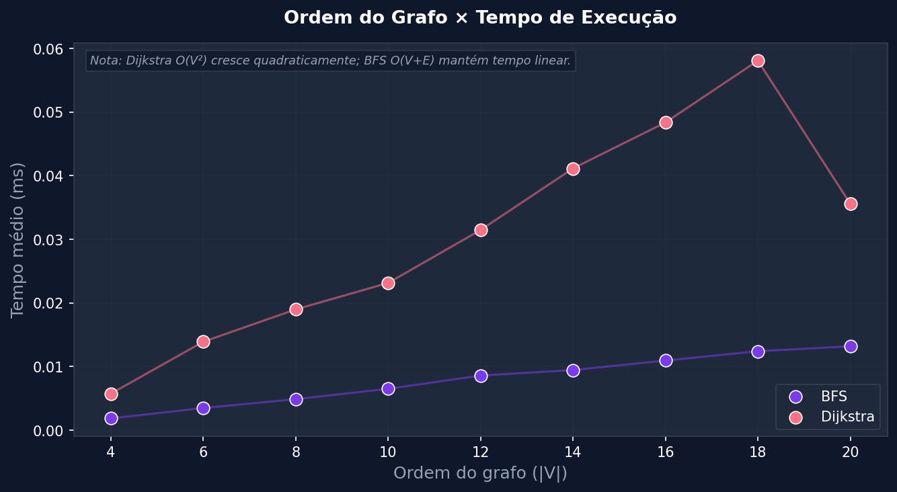
Ordem do Grafo × Tempo
Dispersão: crescimento quadrático do Dijkstra (O(V²)) vs linear do BFS (O(V+E)) confirmado empiricamente em subgrafos crescentes.
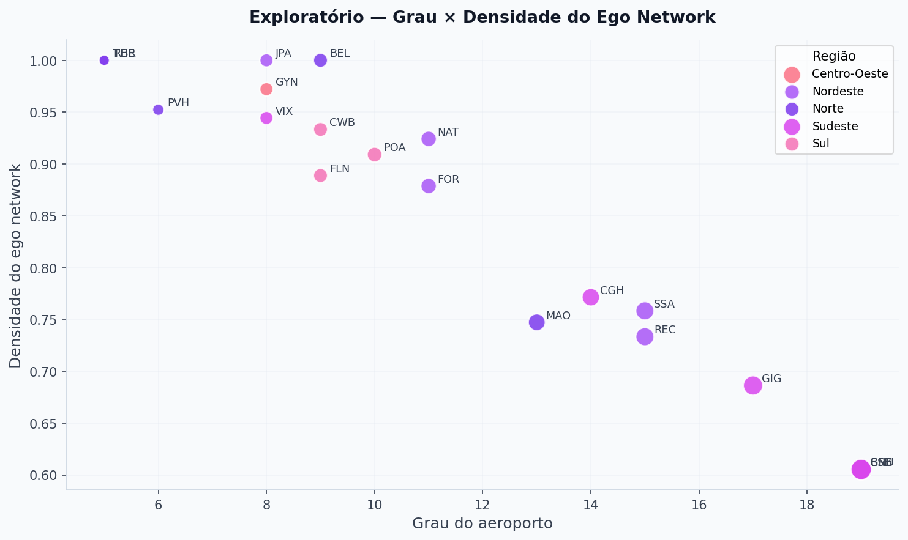
Grau vs Densidade Ego
Dispersão: aeroportos com alto grau (hubs) têm menor densidade ego; aeroportos pequenos têm ego-redes completas.
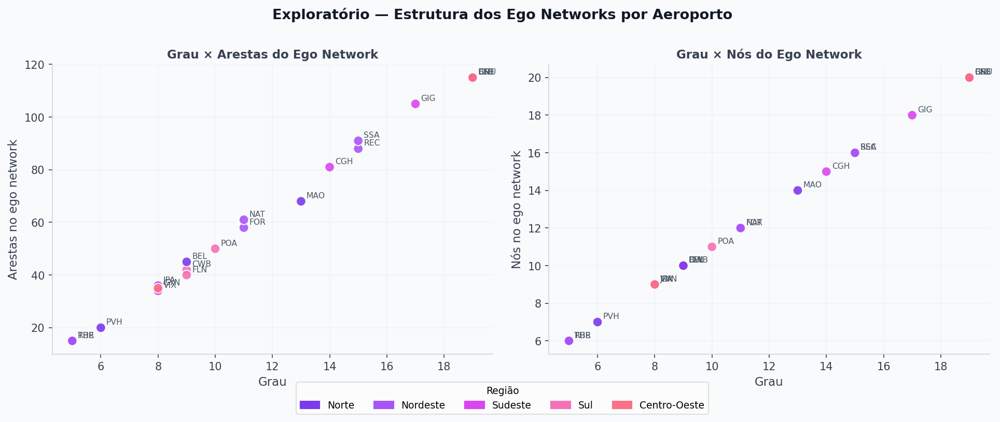
Métricas de Ego-Redes
Painel comparativo com grau, tamanho e densidade da ego-rede por aeroporto.
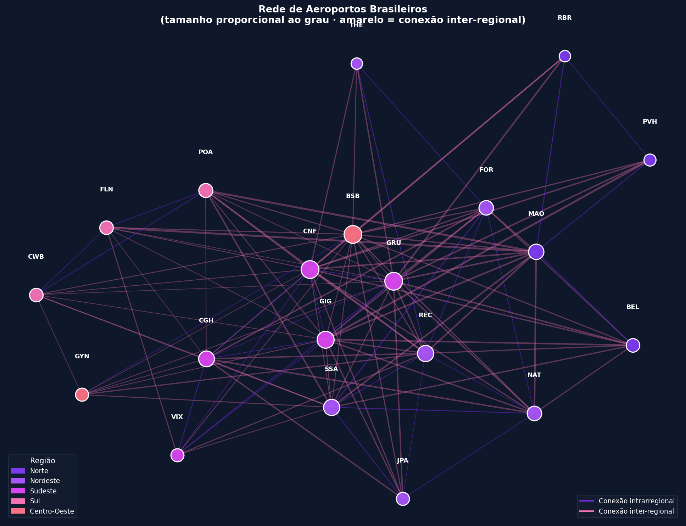
Rede Completa
Grafo completo com 20 nós e 115 arestas. Nós coloridos por região, tamanho proporcional ao grau.
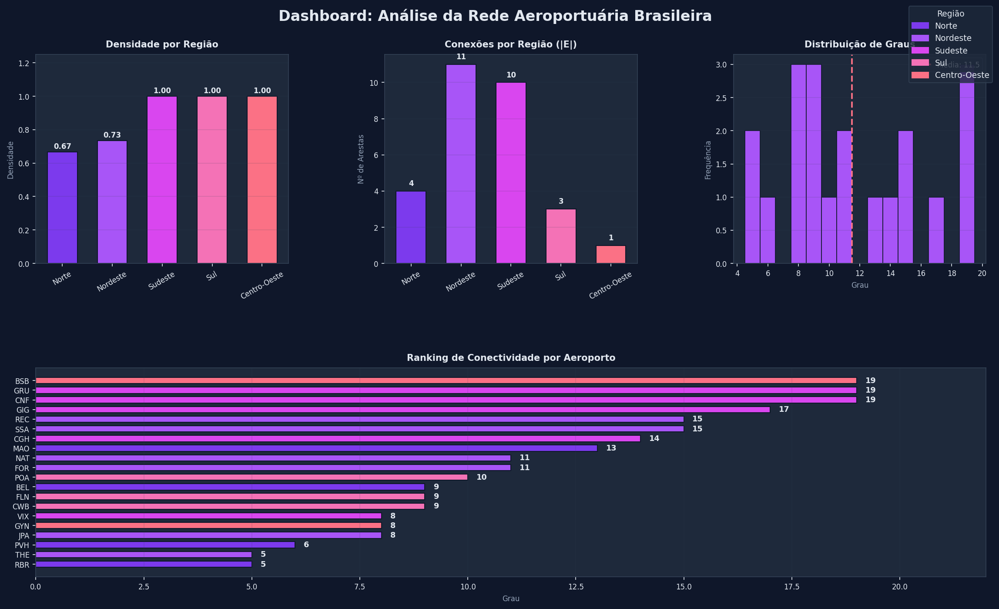
Dashboard Executivo
Síntese dos principais achados da Parte 1 em um único painel.
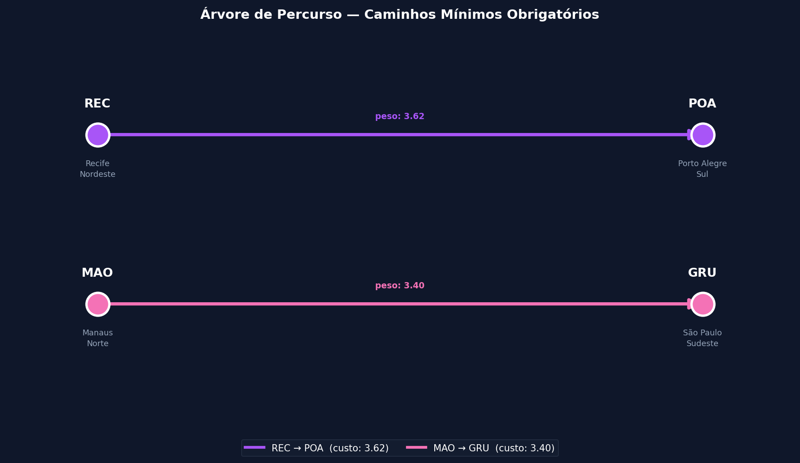
Árvore de Percurso
Caminhos obrigatórios REC→POA e MAO→GRU destacados sobre o grafo de aeroportos.